琴生不等式（英语：Jensen’s inequality，台湾称作简森不等式[1]），或称延森不等式，以丹麦数学家约翰·延森命名。它给出积分的凸函数值和凸函数的积分值间的关系，在此不等式最简单形式中，阐明了对一平均做凸函数变换，会小于等于先做凸函数变换再平均。若将琴生不等式应用在二点上，就回到了凸函数的基本性质：过一个凸函数上任意两点所作割线一定在这两点间的函数图象的上方，即：
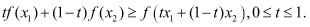
测度论的版本[编辑]
假设是集合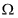的正测度，使得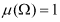。若是勒贝格可积的实值函数，而是在的值域上定义的凸函数，则
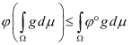
概率论的版本[编辑]
以概率论的名词，是个概率测度。函数换作实值随机变量（就纯数学而言，两者没有分别）。在空间上，任何函数相对于概率测度的积分就成了期望值。这不等式就说，若是任一凸函数，则
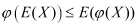
特例[编辑]
概率密度函数的形式[编辑]
假设是实轴上的可测子集，而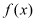是非负函数，使得
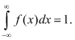
以概率论的语言，是个概率密度函数。
延森不等式变成以下关于凸积分的命题：
若是任一实值可测函数，在的值域中是凸函数，则
若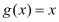，则这形式的不等式简化成一个常用特例：
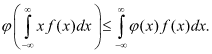
有限形式[编辑]
若是有限集合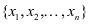，而是上的正规计数测度，则不等式的一般形式可以简单地用和式表示：
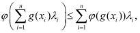
其中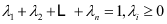。
若是凹函数，只需把不等式符号调转。
假设是正实数，，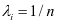及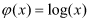。上述和式便成了
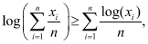
两边取取以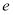为底数的指数函数就得出熟悉的均值不等式：
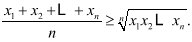
这不等式也有无限项的离散形式。
斯图尔特定理（英语：Stewart’s Theorem），或译史都华定理、斯特瓦尔特定理、斯图沃特定理[来源请求]，又称为阿波罗尼奥斯定理。它说明：
在三角形的边上任意取一点，则：
 。
。
该定理由苏格兰数学家马修·斯图尔特（英语：Matthew Stewart (mathematician)）在1746年发表。这个定理以他的名字命名，来纪念他的贡献。[1]
证明[编辑]
设a与p的交点为P。
对互补角APB和APC应用余弦定理，可得：
把第一个等式乘以x，把第二个等式乘以y ：
两式相加，得：
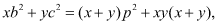
证毕。
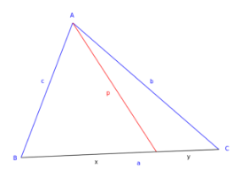
定理 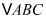 面积为  , A,B,C 的对边分别为 a, b, c ,则
, A,B,C 的对边分别为 a, b, c ,则
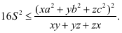
这里,为了方便讨论,我们规定
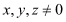
下面给出证明.
设直线 BC 上一点 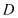 满足 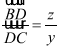 设 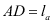 ，则由 Stewart 定理知
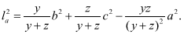
所以 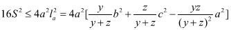
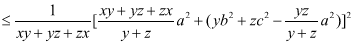
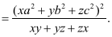
若 为斜三角形,当且仅当  时,等号成立.
时,等号成立.
允许 x, y, z 取 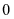 的情况比较显然,这里就不另加讨论了.
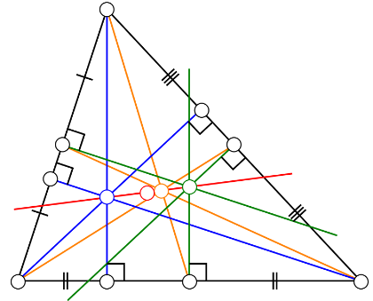
在平面几何中，欧拉线，或称尤拉线（图中的红线）是指过三角形的垂心（蓝）、外心（绿）、重心（黄）和九点圆圆心（红点）的一条直线。莱昂哈德·欧拉，也称尤拉，证明了在任意三角形中，以上四点共线。欧拉线上的四点中，九点圆圆心到垂心和外心的距离相等，而且重心到外心的距离是重心到垂心距离的一半。注意内心一般不在欧拉线上，除了等腰三角形外。
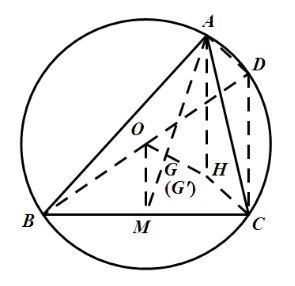
证明[编辑]
如图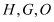分别是的垂心，重心，外心。
设为直线 和外接圆的交点，并连结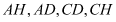。
和外接圆的交点，并连结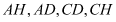。
（1）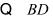是直径，且。
又 是垂心，且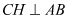。
是垂心，且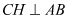。
， 。
。
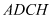为平行四边形。
又分别是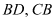的中点，
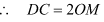，
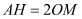
（2）作边上的中线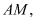连结
设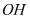交于点
，
，
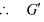即的重心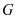
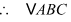的垂心重心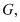外心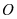三点共线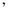直线即欧拉线
推论[编辑]
九点圆的圆心也在欧拉线上，且在垂心到外心的线段的中点
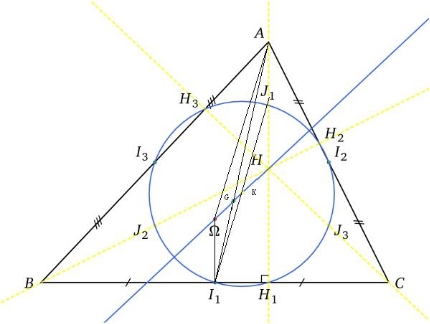
如图，H、G、Ω分别是△ABC的垂心、重心、外心，三角形的三边中点I i，三高的垂足Hi，和顶点到垂心的三条线段的中点J i
令HΩ和J1I1的交点为K，∵BΩ=CΩ，BI1=CI1，∴ΩI1⊥BC，又∵AH1⊥BC，∴ΩI1∥AH1。
∵∠GΩI1=∠AHG，∠GAH=∠GI1Ω，∴△AGH∽△GΩI1。∵AG=2GI1，∴AH=2ΩI1，即ΩI1=J1H。
∵ΩI1∥AH1， J1H=ΩI1 ∴J1K=KI1, HK = KΩ。
同理J2K=KI2， J3K=KI3。 可知K为九点圆圆心。
∵点K在HΩ上，HK = KΩ
∴九点圆圆心在欧拉线上，且在垂心到外心的线段的中点。
九点圆定理：
在平面中，对所有三角形，其三边的中点、三高的垂足、顶点到垂心的三条线段的中点，必然共圆，这个圆被称为九点圆，又称欧拉圆、费尔巴哈圆。
九点圆具有以下性质：
九点圆的半径是外接圆的一半。
圆心在欧拉线上，且在垂心到外心的线段的中点。
九点圆和三角形的内切圆和旁切圆相切（费尔巴哈定理）。
圆周上四点任取三点做三角形，四个三角形的九点圆圆心共圆（柯立芝-大上定理）。
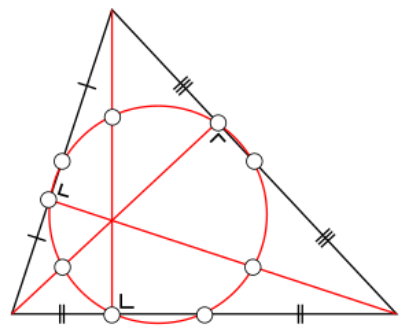
九点圆证明[编辑]
如图：、、为三边的中点，、、为垂足，、、为和顶点到垂心的三条线段的中点。
容易得出、（相似）
因此
同样可得出、（相似）
因此
又，可得出四边形是矩形（四点共圆）
同理可证也是矩形（ 共圆）
共圆）
，因此可知也在圆上（圆周角相等）
同理可证、两点也在圆上（九点共圆）
性质证明[编辑]
九点圆的半径是外接圆的一半，且九点圆平分垂心与外接圆上的任一点的连线。
在直角坐标系中，我们知道圆的方程为，其中为圆的半径，为圆的圆心坐标。若做圆上三点与点的中点的轨迹，则此轨迹的方程式为：
设为外接圆的半径、为外接圆的圆心坐标、点为垂心坐标。
已知九点圆通过顶点到垂心的三条线段的中点，故此轨迹圆就是九点圆，半径是外接圆的一半，且平分垂心与外接圆上的任一点的连线。
同时还可以得出下面的性质：
圆心在欧拉线上，且在垂心到外心的线段的中点。由此可知，给定三角形顶点座标，九点圆圆心为
九点圆和三角形的内切圆和旁切圆相切（费尔巴哈定理）。
主条目：费尔巴哈定理
圆周上四点任取三点做三角形，四个三角形的九点圆圆心共圆。
其他[编辑]
垂心四面体的12点共球九点圆是垂心四面体各棱的中点和垂足（相对于对棱）共球的特例，两者是同构的
主旁心三角形的九点圆是三角形的外接圆
中点三角形的外接圆是三角形的九点圆
三线坐标中，九点圆的座标为
三线坐标中，费尔巴哈点的座标为
张角定理:
是平面几何学的一个定理，指任意三角形ABC中，D是边BC（包括端点）上的点，连接AD，则
其逆定理亦成立。
证明[编辑]
由两个小三角形面积和等于大三角形面积，得到如下等式：
各项均除以，则得到：
证毕。
正切定理: 三角学中的一个定理。
[1]根据该定理，在平面三角形中，正切定理说明任意两条边的和除以第一条边减第二条边的差所得的商等于这两条边的对角的和的一半的正切除以第一条边对角减第二条边对角的差的一半的正切所得的商。即：
证明[编辑]
由开始，由正弦定理得出
（和差化积，参阅三角恒等式）
海伦公式（英语：Heron’s formula或Hero’s formula），又译希罗公式[1]、希伦公式。
假设有一个三角形，边长分别为，三角形的面积可由以下公式求得：
，其中
中国南宋末年数学家秦九韶发现或知道等价的公式，其著作《数书九章》卷五第二题即三斜求积。“问沙田一段，有三斜，其小斜一十三里，中斜一十四里，大斜一十五里，里法三百步，欲知为田几何？”答曰：“三百十五顷．”其术文是：“以小斜幂并大斜幂，减中斜幂，余半之，自乘于上；以小斜幂乘大斜幂，减上，余四约之，为实，一为从隅，开平方，得积。”若以大斜记为，中斜记为，小斜记为，秦九韶的方法相当于下面的一般公式：
，其中
像其他中国古代的数学家一样，他的方法没有证明。根据现代数学家吴文俊的研究，秦九韶公式可由出入相补原理得出。
由于任何边的多边形都可以分割成个三角形，所以海伦公式可以用作求多边形面积的公式。比如说测量土地的面积的时候，不用测三角形的高，只需测两点间的距离，就可以方便地导出答案。
证明[编辑]
利用三角公式和代数式变形来证明[编辑]
与海伦在他的著作《Metrica》中的原始证明不同，在此我们用三角公式和公式变形来证明。设三角形的三边的对角分别为，则余弦定理为
利用和平方、差平方、平方差等公式，从而有
利用勾股定理和代数式变形来证明[编辑]

用旁心来证明[编辑]
设中，。
为内心，为三旁切圆。
四点共圆，并设此圆为圆。
过做铅直线交于，再延长，使之与圆交于点。再过做铅直线交于点。
先证明为矩形：，又(圆周角相等)。为矩形。因此，。
内切圆半径，旁切圆半径。且易知由圆幂性质得到：。故
婆罗摩笈多公式的最简单易记的形式，是圆内接四边形面积计算。若圆内接四边形的四边长为a, b, c, d，则其面积为：
其中s为半周长：
证明[编辑]
圆内接四边形的面积 = 的面积 + 的面积
但由于是圆内接四边形，因此。故。所以：
对和利用余弦定理，我们有：
代入（这是由于和是互补角），并整理，得：
把这个等式代入面积的公式中，得：

它是的形式，因此可以写成的形式：

引入，
两边开平方，得：
证毕。
更特殊情况[编辑]
若圆O的圆内接四边形的四边长为a, b, c, d，且外切于圆C，则其面积为：
证明[编辑]
由于四边形内接于圆O，所以：
其中p为半周长：

又因为四边形外切圆C，所以：
则：
同理:
，
，
综上：
证毕。
一般情况[编辑]
布雷特施奈德公式[编辑]
对一般四边形的面积有布雷特施奈德公式，其叙述如下：
其中 是四边形一对对角和的一半。
注意到不论取到哪一对对角 的值都一样，因为四边形的内角和是 ，故如果选取到的是另一对角，其对角和的一半是 。而 ，所以有 。
假设此时四边形恰好四顶点共圆，由于圆内接四边形的对角和为 ，因此 ，而且由 ，可推得此时 ，布雷特施奈德公式恰好退化回婆罗摩笈多公式。
柯立芝公式[编辑]
另一个由柯立芝所证明的公式如下[1]：
其中 p 及 q 为四边形对角线之长。在圆内接四边形中，根据托勒密定理我们有，此公式退化回为婆罗摩笈多公式。
棣莫弗公式是一个关于复数和三角函数的公式，命名自法国数学家亚伯拉罕·棣莫弗（1667年－1754年）。其内容为对任意实数和整数，下列性质成立：
其中是虚数单位（）。值得注意的是，尽管本公式以棣莫弗本人命名，他从未直接地将其发表过[1]。为了方便起见，我们常常将合并为另一个三角函数，也就是说：
在操作上，我们常常限制属于实数，这样一来就可借由比较虚部与实部的方式把和变化为和的形式。另外，尽管棣莫弗公式限制须为整数，但倘若适当推广本公式，便可将拓展到非整数的领域。
证明[编辑]
（证明的思路是用数学归纳法证明正整数的情形，并推广到负整数。）
令
（1）当n=0时，显然成立。
（2）当n=1时：
左式右式
因此，成立。
（3）当时：
假设成立，即
当时：

等号1处使用和角公式。
因此，也成立。
综上所述，根据数学归纳法，，成立。
另外，由恒等式：
可知，公式对于负整数情况也成立。
证毕。
检验[编辑]
请注意：由于欧拉公式的证明过程中使用了棣莫弗公式，应用欧拉公式证明会造成循环论证，故而下列方法为检验方法，而非严谨的证明方法。对于类似方法也应注意甄别。最简单的方法是应用欧拉公式[2]。
由于
所以
用棣莫弗公式求根[编辑]
此定理可用来求单位复数的 次方根。设 ，表为
若  ，则 也可以表成：
，则 也可以表成：
按照棣莫弗公式：
于是得到
（其中 ）
也就是：
当 取 ，我们得到 个不同的根：
在代数拓扑中，欧拉示性数（英语：Euler characteristic）是一个拓扑不变量[注 1]，对于一大类拓扑空间有定义。它通常记作 。
。
二维拓扑多面体的欧拉示性数可以用以下公式计算：
${\displaystyle \chi =F-E+V}$
其中.mw-parser-output .serif{font-family:Times,serif}V、E和F分别是点、边和面的个数。特别的，对于所有和一个球面同胚的多面体，我们有
${\displaystyle \chi (S^{2})=F-E+V=2.}$
例如，对于立方体，我们有6 − 12 + 8 = 2，而对于四面体我们有4 − 6 + 4 = 2.
刚才的公式也叫做欧拉公式。该公式最早由法国数学家笛卡儿于1635年左右证明，但不为人知。后瑞士数学家莱昂哈德·欧拉于1750年独立证明了这个公式。1860年，笛卡儿的工作被发现，此后该公式遂被称为欧拉-笛卡儿公式。
定义及性质[编辑]
对于有限CW-复形（CW-Complex）包括有限单纯复形（simplicial complex），欧拉示性数可以定义为交错和
${\displaystyle \chi =k_{0}-k_{1}+k_{2}-\cdots ,}$
其中${\displaystyle k_{i}}$表示${\displaystyle i}$维胞腔的个数。
然后，可以把流形的欧拉示性数定义为一个和它同胚的单纯复形的欧拉示性数。例如，圆圈和环面其欧拉示性数为0而实心球欧拉示性数为1。
闭可定向曲面的欧拉示性数可以通过它们的亏格g来计算
${\displaystyle \chi =2-2g}$.
闭不可定向曲面的欧拉示性数可以用下式通过它们的（不可定向）亏格k来计算
${\displaystyle \chi =2-k}$.
欧拉示性数和三角化的选择无关。公式也可用于到任意多边形的分解。
对于圆盘，我们有${\displaystyle \chi =1}$，对于平面我们有${\displaystyle \chi =2}$，数的时候把外面作为一个面。
对于闭流形，欧拉示性数和欧拉数，也就是其切丛的在流形的基本类上计算的欧拉类。
对于闭黎曼曲面，欧拉示性数也可以通过曲率的积分得到—参看对于二维情况的高斯-博内定理（Gauss-Bonnet）和对于一般情况的广义高斯-博内定理。高斯-博内定理的离散情况的对应是笛卡儿定理，它表明多面体用完整圆圈测量的“总亏量”，是多面体的欧拉示性数；参看亏量。
更一般的，对于所有拓扑空间，我们可以定义第n个贝蒂数${\displaystyle b_{n}}$作为第n个同调群的阶。欧拉示性数可以定义为如下交换和
${\displaystyle \chi =b_{0}-b_{1}+b_{2}-b_{3}+,\cdots .}$
这个定义在贝蒂数全都有限并且在一个特定指标${\displaystyle n_{0}}$以外为0时有意义。
两个同伦的拓扑空间有同构的同调群，所以有相同的欧拉示性数。
从这个定义和庞加莱对偶性，可以得到所有闭合奇数维流形的欧拉数为0的结论。
如果M和N是拓扑空间，则它们的积空间M × N的欧拉示性数为
${\displaystyle \chi (M\times N)=\chi (M)\cdot \chi (N)}$.
偏序集[编辑]
有界偏序集的欧拉示性数的概念是另一种推广，在组合论中很重要。一个偏序集“有界”，如果它有最小和最大元素，我们把它们叫作0和1。这样一个偏序集的欧拉示性数是μ(0,1)，其中μ是在偏序集的相交代数（英语：incidence algebra）中的默比乌斯函数。
证明[编辑]
第一个欧拉公式的严格证明，由柯西在20岁时给出，大致如下：
从多面体去掉一面，通过把去掉的面的边互相拉远，把所有剩下的面变成点和曲线的平面网络。不失一般性，可以假设变形的边继续保持为直线段。正常的面不再是正常的多边形即使开始的时候它们是正常的。但是，点，边和面的个数保持不变，和给定多面体的一样[注 2]
重复一系列可以简化网络却不改变其欧拉数（也是欧拉示性数）F − E + V的额外变换。
若有一个多边形面有3条边以上，我们划一个对角线。这增加一条边和一个面。继续增加边直到所有面都是三角形。
除掉只有一条边和外部相邻的三角形。这把边和面的个数各减一而保持顶点数不变。
（逐个）除去所有和网络外部共享两条边的三角形。这会减少一个顶点、两条边和一个面。
重复使用第2步和第3步直到只剩一个三角形。对于一个三角形F = 2（把外部数在内），E = 3，V = 3。所以F − E + V = 2。证毕。
一、盐城期中布洛卡点题解析
[盐城期中T16一点] 满足 ，则称点 为 的布洛卡点， 为 的布洛卡角 . 在等腰 中， ，若布洛卡点 满足 ，则 与布洛卡角 的正切值分别为______、______.
，若布洛卡点 满足 ，则 与布洛卡角 的正切值分别为______、______.
解析
法一：
如下图1，设 ，则 ，，令
则在 、 中由余弦定理得
，
则
，
，
，
与布洛卡角 的正切值分别为 、
法二： ，，又 ，
，
如下图2，取BC中点 ，连接AM，
，，则
在 中，由正弦定理得
所以 与布洛卡角 的正切值分别为 、 .
QR_Not_Code
We need to teach how doubt is not to be feared but welcomed. It’s OK to say, ‘I don’t know.’
3
0
0